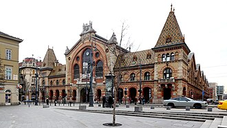

10/26（周一）全组渔人堡 → 本人 自由
⚠ 排得下（有风险点） 作息：早起（09:00 前上渔人堡上层塔楼才免费）；晚上最好 22:30 前结束（周一攀岩馆开到 23:00 也可以）——第二天要赶早车
- ✅排得下；09:00 以后都是弹性安排
- ⚠国会导览要提前订场次；从朋友家出发的时间未知
今天去哪
全组：渔人堡（07:5x–09:00）→ 之后 本人 自由，可以按下面任意组合
必须卡的时间点
| 时间 | 要做的事 |
|---|---|
| 最迟约 07:47 | 在 Deák 坐上 16 路（07:29→07:39、07:38→07:48、07:47→07:57）；从朋友家到 Deák 的时间未知 |
| 09:00 | 全组在渔人堡上层塔楼——09:00 起收费（1,700 HUF，只能刷卡）；日出 06:18 |
| 09:00 以后 | 本人 自由时间（之前的全组下午 / 晚上安排取消） |
| 16:30 / 17:00 | 马加什教堂最后入场 16:30；中央市场周一 17:00 关门 |
| 16:36 | 日落 |
| 最迟约 22:30 | 结束（Gravity / Flow 周一开到 23:00） |
今天的安排（默认组合）
全组：渔人堡（07:5x–09:00）→ 之后 本人 自由，可以按下面任意组合
这个组合会去的地方（图片，7 处）



圆形图是公开实拍（维基百科或维基共享，须有坐标且离地点近）。没有核对上的地点不放字母圆标。小红书截图不放上来。
小红书出处（方便搜原帖；有题目写题目，没有题目写大致内容和作者。截图本身不放上来）：
- Halászbástya 渔人堡：《匈牙利 | 布达佩斯一日游，看这篇就够了！》 · 作者 小熹成了老熹
- Mátyás-templom 马加什教堂：《匈牙利🇭🇺布达佩斯一日游线路旅游攻略》 · 作者 姿势很OK（冲刺100国）
- Flow Boulder：《布达佩斯攀岩馆》 · 作者 蓝精灵
可以去的地方（大概多久）
| 地方 / 活动 | 大概多久 |
|---|---|
| 马加什教堂（就在渔人堡旁，周一 09–17，学生 2,700 HUF） | 45 分钟 |
| 城堡区 / 布达城堡散步（免费） | 1–1.5 小时 |
| 国会导览（jegymester.hu 预订，学生 7,000 HUF；10 月每天 08–18） | 45 分钟 + 安检 20 分钟 |
| 中央市场（周一 06–17）+ 午饭 | 1–1.5 小时 |
| 自由桥 / 河边看日落 16:36 | 30–40 分钟 |
| 🧗 Gravity（离 Széll Kálmán 6′，周一 06–23）或 Flow（周一 06–23） | 2–3 小时，最好 22:30 前结束 |
真实交通时刻
- 16 路 Deák → Szentháromság tér 10′：07:20、07:29、07:38、07:47 …；回程 Szentháromság tér → Deák 09:39、09:48、09:57 …（18′）
- 城堡区 → 国会：步行 13′ 到 Batthyány tér + M2 2′（12:31、12:36 …）+ 步行 5′
- 国会 → 中央市场：2 路电车 Országház, látogatóközpont → Fővám tér 10′（14:07、14:18、14:24 …）
- 中央市场 → Gravity：47/49 路 Fővám tér → Deák 5′ + M2 Deák → Széll Kálmán 5′ + 步行 6′
- Gravity → 市中心：M2 Széll Kálmán → Deák 6′（晚上约每 5′，例如 21:04、21:09 …）
这天全部地点的图片（7 处）
圆形图是公开实拍（维基百科或维基共享，须有坐标且离地点近）。没有核对上的地点不放字母圆标。小红书截图不放上来。
小红书出处（方便搜原帖；有题目写题目，没有题目写大致内容和作者。截图本身不放上来）：
- Halászbástya 渔人堡：《匈牙利 | 布达佩斯一日游，看这篇就够了！》 · 作者 小熹成了老熹
- Mátyás-templom 马加什教堂：《匈牙利🇭🇺布达佩斯一日游线路旅游攻略》 · 作者 姿势很OK（冲刺100国）
- Flow Boulder：《布达佩斯攀岩馆》 · 作者 蓝精灵
这天涉及的地点
- Országház 国会大厦 10 月每天 08:00-18:00（11/1 起 08:00-16:00）；官方售票 jegymester.hu
- Halászbástya 渔人堡 下层 24 小时免费；上层塔楼 09:00-19:00 收费，其余时间免费（只刷卡）
- Mátyás-templom 马加什教堂 周一至周六 09:00-17:00（16:30 最后入场）
- Központi Vásárcsarnok 中央市场 周一 06:00-17:00（另一来源写 18:00）；周日：一说闭市，一说 10-16（冲突）
- Gravity Boulder Bar 周一至周四 06-23；周五 07-23；周六周日 09-21（周日 19:00 起换线，约 25% 区域关闭）
- Flow Boulder 周一至周五 06-23；周六周日 08-22
- Deák Ferenc tér（100E 终点）